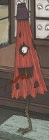

Portrayed as an old-style Japanese umbrella (made of oil paper on bamboo frame) with two arms, one eye, a long tongue, and a single leg in place of a handle. It is seen as a light-hearted and peaceful yōkai.
There are no folkloric tales for this yōkai.